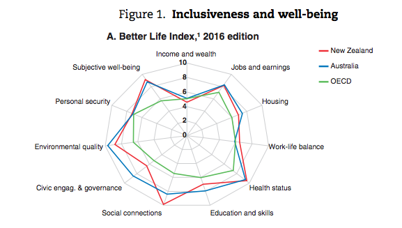
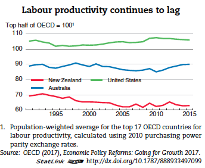

Working out why the Australian economy has left New Zealand's in the dust for the last thirty years is a bit tricky. I've had a go at it on this blog once before. Anyway, now New Zealand is coming back into fashion. They've certainly followed Charlie Munger's advice and tried not to be stupid, rather than try to be too clever, in pursuing an 'Investment approach' to welfare in which they do something really astonishing unstupid which is to look at welfare as a long-term liability rather than as an annual cost. This is driving a lot of good behaviour in trying to target programs towards managing that liability which gets them focused on the most promising ways of lowering their liability.
But I was interested to see this OECD graph showing that at just the time we've heard about how we'll they're doing, our labour productivity has been outstripping theirs. (Labour productivity is, of course, a partial measure, and perhaps it is influenced by our greater investment during the mining boom.Anyway, the thing that bugs me is the OECD reporting to its own "Better Life Index". It's methodology is a shambles, completely ignoring the prospect of double counting in aggregating the various dimensions.[1. You can read about the problems at greater length in our original report establishing the HALE index.]
But the thing that really gets me about the spider's web diagram above is that on the "income and wealth" dimension, it rates Australia and New Zealand equal, even though New Zealand's income per capita is way below ours (Having been equal to us as recently as 1970). Meanwhile Australia's "civic engagement and governance" is superior, I presume because it's superior to everyone's. Why? Because we force people to vote and the index calls voting 'civic engagement' whether or not you're forced to engage. They recognise it as a problem but have no professionally respectable way of correcting the error, so even though a little more weakness of character might help them avoid obvious errors, they stick with professional respectability. Not everyone is following Charlie Munger's advice.
We are by no means the only country with compulsory voting and I think you will find that other countries with compulsory voting do not score as highly on civic engagement.
That may well be true, but doesn't gainsay what I said, which is based on my perusal of the Index when constructing the HALE.
Curious about "personal security" as well, being the one place other than wealth that both countries drop to the OECD average. I wonder both why the OECD average isn't higher, and why ours is low.